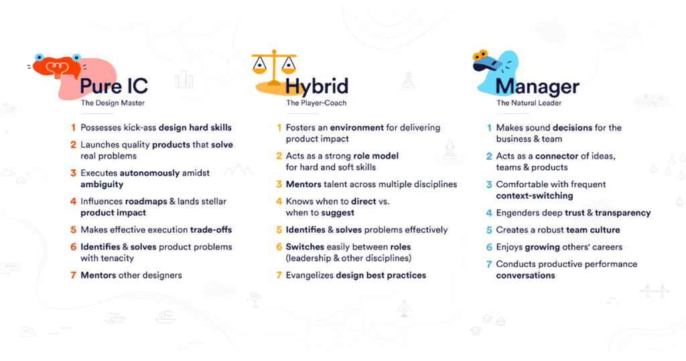
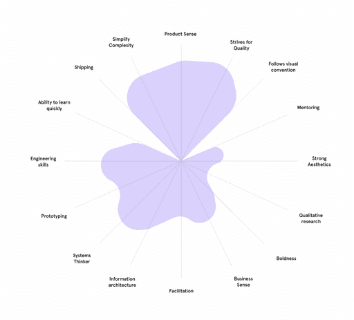

Kumu Design Career Framework
Crafting a dual-track growth framework that provides structure and guidance for Kumu's product design team
Two tracks, with a player-coach stage
Kumu's design team uses a dual-track growth framework. Designers can grow as individual contributors (ICs) or as managers.
At the lead level, before choosing a track, designers work as hybrids, or player-coaches: sometimes players, sometimes coaches. Doing both helps them figure out which path fits them best.

Five competencies, 2–4 skills each
The framework is split into five competencies. Each has 2–4 skills, and each skill has its own milestones.
Craft
- Visual Design — Designing and executing interfaces to a high quality of craft that drive outcomes for the business.
- UX Design — Defining requirements, alone and with the product team, and designing simple, elegant interfaces for complex systems.
- Patterns — Delivering UX that follows best practices and fits the patterns already in the product.
Strategic Thinking & Planning
- Product Thinking — Connecting design goals to the strategy of the PM's team and the company, defining a vision for your area of the product, and understanding the roadmap that delivers it.
- Data — Turning data and user feedback into actionable insights, and tying quantified product goals to business outcomes.
Communication
- Communication — Sharing the right information with the right people at the right time, listening well, and paying attention to timing, medium, brevity, and tone.
- Collaboration — Working closely with engineering, design, and the rest of the team to ship iteratively, and bringing affected stakeholders' requirements into design decisions early.
Toolkit
- Process — Defining and documenting how the team works, and finding ways to improve it.
- Toolkit — Using a broad set of tools to work through flows, interaction, and motion, and to tell a story through illustration, animation, or prototypes.
Leadership
- Culture — Bringing groups together and fostering a happy, productive environment.
- Mentorship — Guiding others in their personal and professional development.
- Recruiting — Bringing in excellent staff members.
- Career Growth — Bringing in excellent staff members.
Hitting a milestone: the 5C rule
You cross a milestone as you go deeper or take on more responsibility. Doing something once isn't enough. You need to show "Conscious, Comfortable, Continuous, Consistent Competency":
- Conscious: having devoted intentional effort to this endeavor,
- Comfortable: without being overly stretched,
- Continuous: for a reasonable period of time,
- Consistent: reliably and evenly,
- Competency: meeting the criteria.
Room for different designer shapes
We've always hired multi-faceted, T-shaped people who bring more than craft. A rigid ladder with a checklist of milestones would limit their shapes and slow their growth. People do their best work when they're at their natural best.
So designers choose which themes fit their own journey and focus there.

View the complete framework in tabular format here.